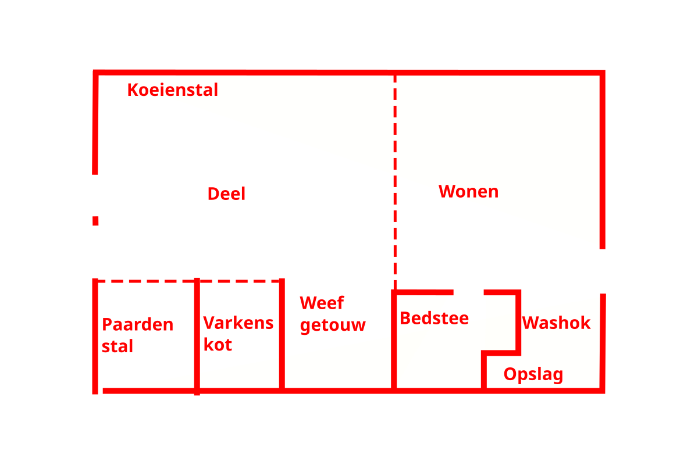

1. Willkommen bei „Los Hoes“

Lageplan des „Los Hoes“ mit Links zu einigen Hörpunkten.
Willkommen zur Audioführung „Los Hoes: Das Bauernleben in Twente“ der Museumfabriek.
Heute begeben Sie sich auf eine Reise in die Vergangenheit.
Stell dir vor: Du bist Bauer in Twente, vor langer Zeit.
Wie lebst du dann, was isst du und wie sieht dein Bauernhof aus?
Das erfährst und siehst du in dieser Führung.
Du kannst der Tour folgen, indem du jeweils zum nächsten Hörpunkt gehst (Pfeil oben rechts auf deinem Bildschirm). Du kannst einen Hörpunkt auch auswählen, indem du auf einen nummerierten roten Punkt auf dem obenstehenden Lageplan klickst. Die Tour dauert etwas mehr als 20 Minuten.
Manchmal ist es möglich, noch ein paar weitere Informationen zu einem Thema zu erhalten, wie zum Beispiel zusätzliche Fotos oder kurze Videos. Wenn du das möchtest, kannst du auf die Schaltfläche „Weitere Infos“ klicken, die dann rechts in der Mitte deines Bildschirms erscheint. Dadurch dauert die Tour natürlich etwas länger.
Du kannst auch eine eigene Reihenfolge (und Länge) festlegen, indem du auf dem Stadtplan die Objekte auswählst, die dich am meisten interessieren.
Du kannst dir den Text anhören (am besten mit Kopfhörern), ihn aber auch einfach auf deinem Bildschirm lesen. Klicke auf die Hilfe-Schaltfläche (?), um eine Erklärung zu den Schaltflächen zu erhalten. Klicke auf den Pfeil nach rechts, um zum ersten Hörpunkt zu gelangen.
Viel Spaß.